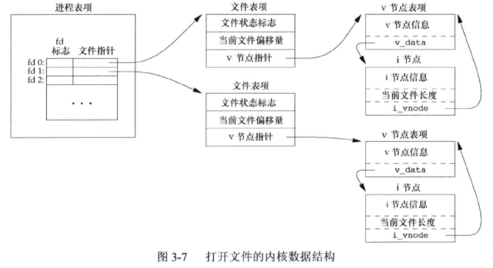
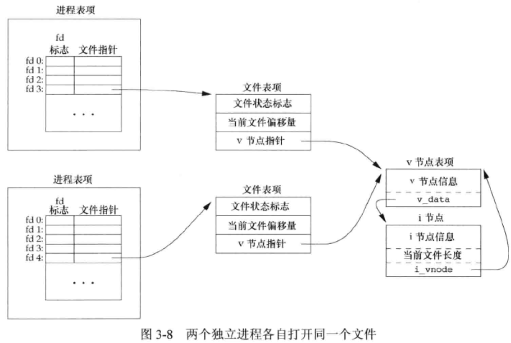

《Unix 环境高级编程》
第1章 Unix基础知识
1.5 输入和输出
- bash中
>将标准输出重定位，<将标准输入重定位，>>将标准输出重定位并以append形式输出。 - 函数
open,read,write,lseek，close提供了不带缓冲的I/O - 标准I/O带缓冲如
printf，fgets
1.7 出错处理
- 当UNIX系统函数出错时，通常会返回一个负值，整型变量
errno通常会设置成一个特定的值。- 如果没有出错，该值不会被例程清除
- 任意函数都不会把
errno设置为0 char* strerror(int errno);返回一个出错消息字符串。void perror(const char* msg);在标准错误流上输出，”$(msg): $(strerror(errno))/n”
第3章 文件I/O
3.3 open, openat
int open(const char* path, int oflag, ... /* mode_t*/ mode);int openat(int fd, const char* path, int oflag, ... /* mode_t*/ mode);- openat中的path以fd所在路径计算的相对路径。
- O_APPEND: 每次写都追加到文件尾端。
- O_CLOEXEC：将FD_CLOEXEC设置为文件描述符标志。
3.4 create
- create以只写形式打开文件，推荐使用
open(path, O_CREAT|O_RDWR|O_TRUNC);。
3.5 lseek
- 只要文件用O_APPEND打开，无论如何lseek，每次写都在文件尾端，一次成功写后，文件偏移量会增加。
- 文件偏移量可以大于文件偏移长度，此时文件中将形成空洞，位于文件中但没写过的字节都为0；空洞不在磁盘上占用缓存区。
- lseek只修改文件偏移量，不进行任何I/O操作。
3.10


3.12 dup, dup2
1 | int dup(int fd); //返回当前可用文件描述符中最小的 |
fd!=fd2时，fd2的FD_CLOEXEC将被清除。- close-on-exec总是由
dup函数清除。
- close-on-exec总是由
- 返回值将与fd共享一个文件表项。
3.13 sync, fsync, fdatasync
- 写文件时，内核通常现将数据复制到缓冲区，然后排入队列，晚些再写入磁盘（延迟写）。
void sync(void);将所有修改过的块缓冲区写入队列就返回，不等写结束。int fsync(int fd);将fd的修改写入磁盘后再返回，写入内容包括数据和文件属性。int fdatasync(int fd);将fd的修改写入磁盘后再返回，写入内容只有数据。
3.14 fcntl
int fcntl(int fd, int mode,... /*int arg */);更改已打开文件的属性。
3.16 /dev/fd
int open("/dev/fd/n",mode)等于int dup(n);大多数时候会忽略mode，此时mode等于描述符n的mode。